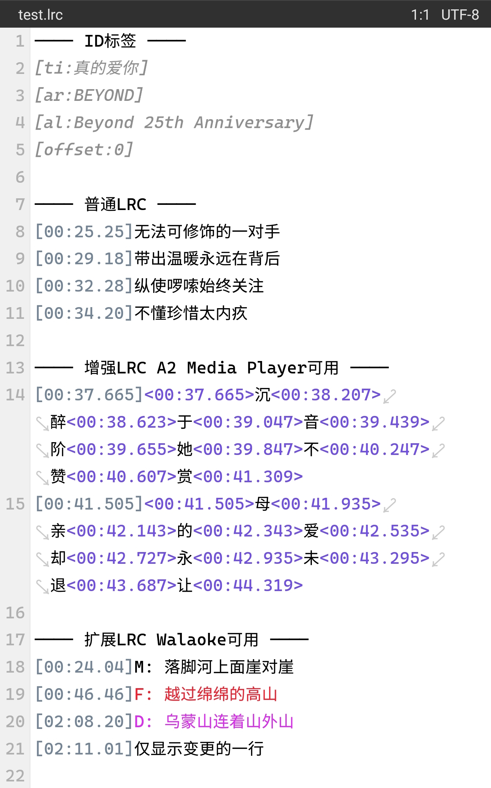
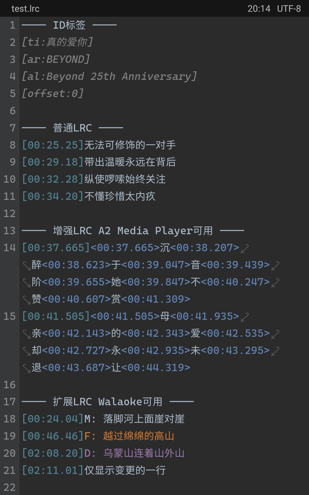

MT管理器中高亮lrc文件
MT管理器是一款非常好用的文件管理器，也提供了丰富的自定义语法高亮方案，而歌词文件(.lrc)也是非常常用的一类文件，这里给出一种高亮方案。
效果


代码
Lyric.mtsx
{
name: ["Lyric", ".lrc"]
hide: false
ignoreCase: true
styles: [
"normalTimestamp", #748495, #508090
"enhancedTimestamp", #7050E0, #6080B0
"extendedTimestampF", #EF2030, #CC7832
"extendedTimestampD", #DA2CEF, #9876AA
]
bracketPairs: ["[]", "<>"]
contains: [
// 普通LRC
{match: /\[\d+:\d+.\d+\]|\[\d+:\d+\]/, 0: "normalTimestamp"}
// 增强LRC
{match: /<\d+:\d+.\d+>|<\d+:\d+>/, 0: "enhancedTimestamp"}
// 扩展LRC
// 应用极少，故随便写写
{match: /(?<=\])F:.*/, 0: "extendedTimestampF"}
{match: /(?<=\])D:.*/, 0: "extendedTimestampD"}
// ID标签，当作注释
{match: /\[[a-z]+:.*\]/, 0: "comment"}
]
}
原理及lrc文件介绍
lrc文件是一种歌词文件，基本格式如下：
[mm:ss.xx]第一句歌词
[mm:ss.xx]第二句歌词
[mm:ss.xx]第三句歌词
其中[mm:ss.xx]称为时间戳(timestamp)，用来告诉播放器应该在这个时间显示时间戳后面的歌词，因此我们只需要匹配前面的时间戳并配置颜色即可。不过需要注意的是，时间戳除了[mm:ss.xx]还有[mm:ss]这种格式，因此我们需要这样匹配：
\[\d+:\d+.\d+\]|\[\d+:\d+\]
可以确保匹配到两种时间戳。
在文件的前面可能会有一些ID标签，它们通常由这些构成，大小写均可（不过并非是必要的）：
[ar:歌手]
[ti:歌曲名]
[al:专辑名]
[by:歌词作者]
[offset:时间偏移量]
[re:资源类型]
[ve:版本]
[length:歌曲时长]
所以只需要匹配带有数个字母与一个冒号的内容即可，当作注释处理，由于我设置了ignoreCase: true，所以大小写只用管一个即可。
\[[a-z]+:.*\]
另一种是扩展lrc，它仅在Walasoft的Walaoke上可用。它支持指定歌唱者对应的性别，M：男性、F：女性、D：合唱。
[mm:ss.xx]M:第一句歌词
[mm:ss.xx]F:第二句歌词
[mm:ss.xx]D:第三句歌词
有必要注意的是，事实上它非常不常用，所以我只是随便写了一下，仅匹配带字母的那一行。
(?<=\])F:.*
还有一种是增强lrc，是由A2 Media Player开发的，它支持将时间戳精准到字。
[mm:ss.xx]<mm:ss.xx>第一行第一个词<mm:ss.xx>第一行第二个词<mm:ss.xx>...第一行最后一个词<mm:ss.xx>
[mm:ss.xx]<mm:ss.xx>第二行第一个词<mm:ss.xx>第二行第二个词<mm:ss.xx>...第二行最后一个词<mm:ss.xx>
要匹配这个也很简单，和普通的lrc时间戳相同，匹配<>即可。
<\d+:\d+.\d+>|<\d+:\d+>
而事实上这种lrc比扩展lrc更常见，我们常用的网易云、酷狗等音乐平台都能看见精确到字的歌词，我们也可以使用类似LDDC这样的软件下载增强lrc歌词文件，并使用MusicPlayer2这样的软件来显示它们。